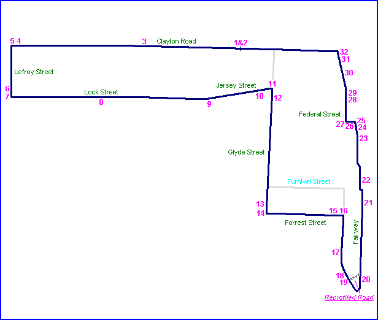
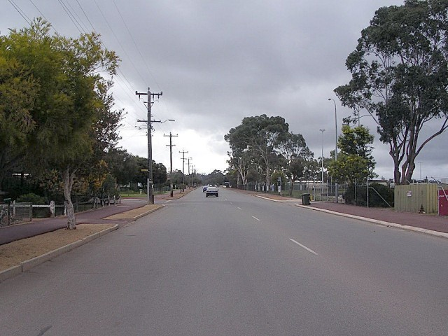
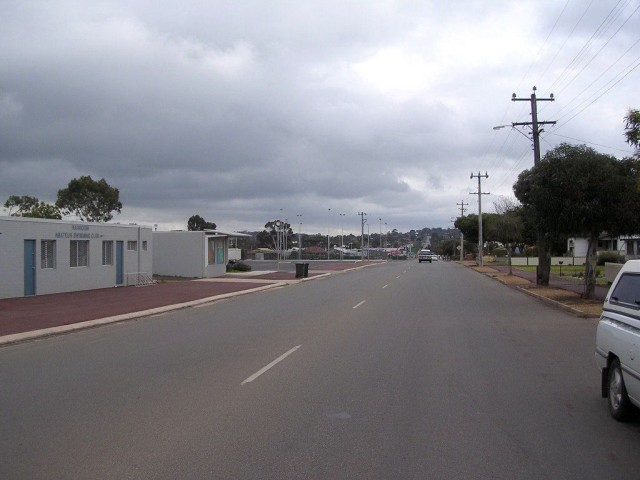
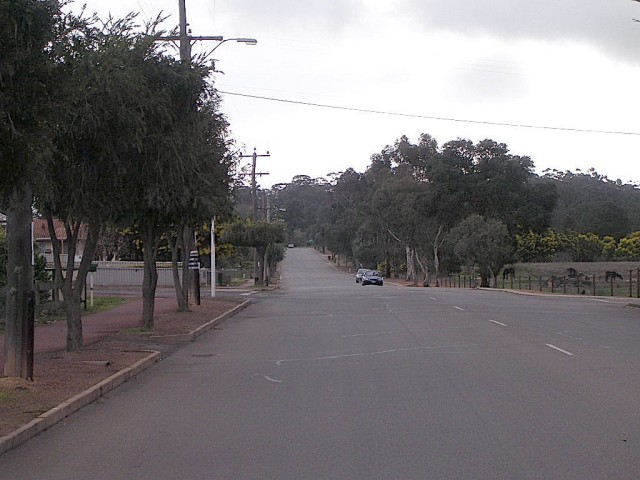
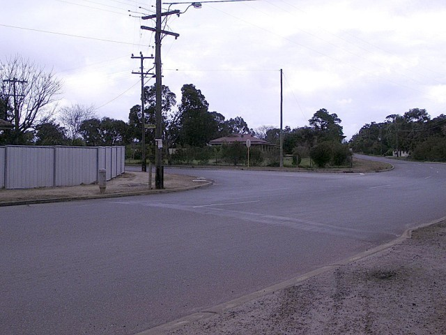
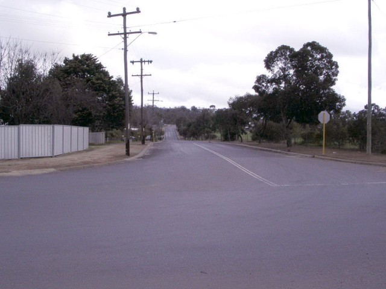
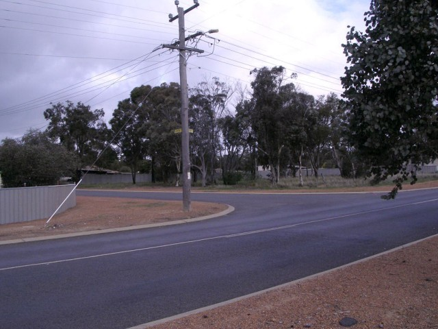
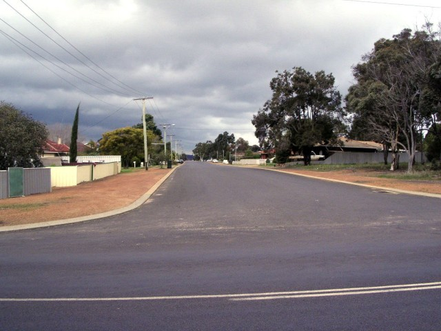
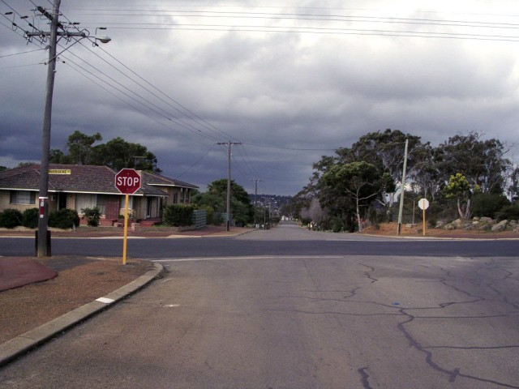

Narrogin (GP Variant) - Clayton Road via Lefroy Street to Lock Street
|| Contents || Clayton / Lefroy / Lock | Jersey / Glyde / Forrest | Federal / Fairway | Federal || Home ||

Numbers on the map represent the location where the photographs were taken. Scroll
down to view the photographs.
Return to racingcircuits.net's Photo Archive Main Index

1 - Grand Prix circuit start area on Clayton Street.

2 - Looking back at the location of the starting grid.

3 - A long up hill run to the first corner.

4 - Left turn into Lefroy Street.

5 - Lefroy Street.

6 - Left turn into Lock Street.

7 - Entry of Lock Street.

8 - Continuing along Lock Street.
Photographs and Text ©Neil Fackerell. Reproduced here with kind permission.